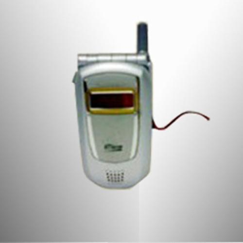

css3选择器详解
css的选择器有：
- div 标签选择器
- .box 类名选择器
- #box id选择器
- div p 后代选择器
- div.box 交集选择器
- div,p,span 并集选择器
- div>p 子代选择器
- * : 通配符
- div+p: 选中div后面相邻的第一个p
- div~p: 选中的div后面所有的p
css3的选择器有：
- 属性选择器
- 结构伪类选择器
- 伪元素选择器
属性选择器的标志性符号是 []。匹配含义： ^：开头 $：结尾 *：包含
格式
- E[title] 选中页面的E元素，并且E存在 title 属性即可。
- E[title="abc"]选中页面的E元素，并且E需要带有title属性，且属性值完全等于abc
- E[attr~=val] 选择具有 att 属性且属性值为：用空格分隔的字词列表，其中一个等于 val 的E元素
- E[attr|=val] 表示要么是一个单独的属性值，要么这个属性值是以“-”分隔的
- E[title^="abc"] 选中页面的E元素，并且E需要带有 title 属性,属性值以 abc 开头
- E[title$="abc"] 选中页面的E元素，并且E需要带有 title 属性,属性值以 abc 结尾
- E[title*="abc"] 选中页面的E元素，并且E需要带有 title 属性,属性值任意位置包含abc
伪类选择器的标志性符号是 :。CSS中有一些伪类选择器，比如:link、:active、:visited、:hover，这些是动态伪类选择器。CSS3又新增了其它的伪类选择器。这一小段，我们来学习CSS3中的结构伪类选择器：即通过结构来进行筛选
- E:first-child 匹配父元素的第一个子元素E
- E:last-child 匹配父元素的最后一个子元素E
- E:nth-child(n) 匹配父元素的第n个子元素E。注意，盒子的编号是从1开始算起，不是从0开始算起
- E:nth-child(odd) 匹配奇数
- E:nth-child(even) 匹配偶数
- E:nth-last-child(n) 匹配父元素的倒数第n个子元素E
我们以ul,li为例:
- 如果选择器写成li:nth-child(2)，则表示第2个 li
- 如果选择器写成li:nth-child(n)，则表示所有的li
- 如果选择器写成li:nth-child(2n)，则表示所有的第偶数个 li
- 如果选择器写成li:nth-child(2n+1)，则表示所有的第奇数个 li
- 如果选择器写成li:nth-child(-n+5)，则表示前5个 li
- 如果选择器写成li:nth-last-child(-n+5)，则表示最后5个 li
- 如果选择器写成li:nth-child(7n)，则表示选中7的倍数
- E:first-of-type 匹配同类型中的第一个同级兄弟元素E
- E:last-of-type 匹配同类型中的最后一个同级兄弟元素E
- E:nth-of-type(n) 匹配同类型中的第n个同级兄弟元素E
- E:nth-last-of-type(n) 匹配同类型中的倒数第n个同级兄弟元素E
- E:empty 匹配没有任何子节点（包括空格等text节点）的元素E
- E:target 匹配相关URL指向的E元素。要配合锚点使用
伪元素选择器的标志性符号是 ::。
- E::before 设置在 元素E 前面（依据对象树的逻辑结构）的内容，配合content属性一起使用
- E::after 设置在 元素E 后面（依据对象树的逻辑结构）的内容，配合content属性一起使用
- 通过伪元素选择器，就可以添加出类似于span标签的效果,通过这两个属性添加的伪元素，是行内元素，需要转换成块元素才能设置宽高。
- E::first-letter 设置元素 E 里面的第一个字符的样式
- E::first-line 设置元素 E 里面的第一行的样式
- E::selection 设置元素 E 里面被鼠标选中的区域的样式
CSS3属性详解
text-shadow：设置文本的阴影,text-shadow 可以设置多个阴影，每个阴影之间使用逗号隔开。
设置文本阴影
生命诚可贵
生命诚可贵
盒模型中的 box-sizing 属性,它的属性值可以是：content-box(外加模式,css的默认方式,)、border-box(内减模式)。
外加模式:此时设置的 width 和 height 是内容区域的宽高。盒子的实际宽度 = 设置的 width + padding + border.此时改变 padding 和 border 的大小，也不会改变内容的宽高，而是盒子的总宽高发生变化。
内减模式 :此时设置的 width 和 height 是盒子的总宽高。盒子的实际宽度 = 设置的 width。此时改变 padding 和 border 的大小，会改变内容的宽高，盒子的总宽高不变。
linear-gradient设置盒子从左到右渐变;border-radius：边框圆角
CSS3动画详解
transition的中文含义是过渡。过渡是CSS3中具有颠覆性的一个特征，可以实现元素不同状态间的平滑过渡（补间动画），经常用来制作动画效果。补间动画：自动完成从起始状态到终止状态的的过渡。不用管中间的状态。帧动画：通过一帧一帧的画面按照固定顺序和速度播放。如电影胶片。
transition: 让哪些属性进行过度 过渡的持续时间 运动曲线 延迟时间;

小米手机功能牛逼,质量第一!
转换是 CSS3 中具有颠覆性的一个特征，可以实现元素的位移、旋转、变形、缩放，甚至支持矩阵方式。在 CSS3 当中，通过 transform 转换来实现 2D 转换或者 3D 转换。2D转换包括：缩放、移动、旋转。
缩放格式:transform: scale(x, y);
位移格式:transform: translate(水平位移, 垂直位移);
用偏移 translate 来做absolute的盒子居中
transform: rotate(角度),参数解释：正值 顺时针；负值：逆时针.
移动：translateX、translateY、translateZ,同上，此处省略
透视：perspective.电脑显示屏是一个 2D 平面，图像之所以具有立体感（3D效果），其实只是一种视觉呈现，通过透视可以实现此目的电脑显示屏是一个 2D 平面，图像之所以具有立体感（3D效果），其实只是一种视觉呈现，通过透视可以实现此目的
格式有两种写法：
- 作为一个属性，设置给父元素，作用于所有3D转换的子元素
- 作为 transform 属性的一个值，做用于元素自身
3D元素构建是指某个图形是由多个元素构成的，可以给这些元素的父元素设置transform-style: preserve-3d来使其变成一个真正的3D图形。属性值可以如下：transform-style: preserve-3d; /* 让 子盒子 位于三维空间里 */或者transform-style: flat; /* 让子盒子位于此元素所在的平面内（子盒子被扁平化） */
动画
动画是CSS3中具有颠覆性的特征，可通过设置多个节点 来精确控制一个或一组动画，常用来实现复杂的动画效果。
]
定义动画的步骤
- 通过@keyframes定义动画
- 将这段动画通过百分比，分割成多个节点；然后各节点中分别定义各属性
- 在指定元素里，通过 animation 属性调用动画。
Flex布局图文详解
默认文档流中，在一个父容器里放置多个块级的子元素，那么，这些子元素会默认从上往下排列。在此基础之上，如果我给父容器仅仅加一个 display: flex属性,子元素们会在水平方向上，从左至右排列.
flex 布局的子元素不会脱离文档流， 很好地遵从了“流的特性”.但你如果用 float 来做布局，float 属性的元素会脱离文档流，而且会涉及到各种 BFC、清除浮动的问题。浮动相关的问题，比较麻烦，所以也成了面试必问的经典题目。但有了 flex 布局之后，这些问题都不存在的
flex 是一种现代的布局方式，是 W3C 第一次提供真正用于布局的 CSS 规范。 flex 非常提供了丰富的属性，非常灵活，让布局的实现更佳多样化，且方便易用。
flex 唯一的缺点就在于，它不支持低版本的 IE 浏览器。 flex 布局不支持 IE9 及以下的版本；IE10及以上也只是部分支持。如果你的页面不需要处理 IE浏览器的兼容性问题，则可以放心大胆地使用 flex 布局。
- 弹性盒子：指的是使用 display:flex 或 display:inline-flex 声明的父容器。
- 子元素/弹性元素：指的是父容器里面的子元素们（父容器被声明为 flex 盒子的情况下）。
- 主轴：flex容器的主轴，默认是水平方向，从左向右。
- 侧轴：与主轴垂直的轴称作侧轴，默认是垂直方向，从上往下。
- 主轴和侧轴并不是固定不变的，可以通过 flex-direction 更换方向
flex-direction 属性：用于设置盒子中子元素的排列方向
- row 从左到右水平排列子元素（默认值）
- column 从上到下垂直排列子元素
- row-reverse 从右向左排列子元素
- column-reverse 从下到上垂直排列子元素
- flex-wrap：控制子元素溢出时的换行处理。
- justify-content：控制子元素在主轴上的排列方式
- align-items：设置子元素在侧轴上的对齐方式。
web字体
字体的常见格式
- TureTpe格式：.ttf 字体是Windows和Mac的最常见的字体，是一种RAW格式。支持这种字体的浏览器有IE9+、Firefox3.5+、Chrome4+、Safari3+、Opera10+、iOS Mobile、Safari4.2+.
- OpenType格式：(.otf),.otf 字体被认为是一种原始的字体格式，其内置在TureType的基础上。支持这种字体的浏览器有Firefox3.5+、Chrome4.0+、Safari3.1+、Opera10.0+、iOS Mobile、Safari4.2+。
- Web Open Font Format格式：(.woff)woff字体是Web字体中最佳格式，他是一个开放的TrueType/OpenType的压缩版本，同时也支持元数据包的分离。支持这种字体的浏览器有IE9+、Firefox3.5+、Chrome6+、Safari3.6+、Opera11.1+。
- Embedded Open Type格式：(.eot),.eot字体是IE专用字体，可以从TrueType创建此格式字体，支持这种字体的浏览器有IE4+。
- SVG格式：(.svg),.svg字体是基于SVG字体渲染的一种格式。支持这种字体的浏览器有Chrome4+、Safari3.1+、Opera10.0+、iOS Mobile Safari3.2+。
总结：我们就需要为不同的浏览器准备不同格式的字体。通常我们会通过字体生成工具帮我们生成各种格式的字体，因此无需过于在意字体格式之间的区别。也就是同过相关网站的工具帮你生成字体，然后你引入，类似字体图标。
Sass入门